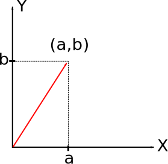
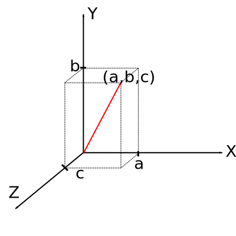
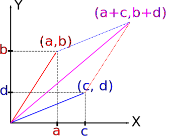
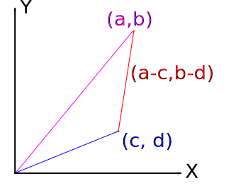
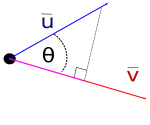

Notes on Vectors, Dot Products, Projections
Christopher Tralie
- Vectors and Magnitudes
- Vector Addition, Subtraction, and Scalar Multiplication
- Dot Products
- Projections
- Cross Product
Today we went over some fundamental concepts in vector math. Below I will write down the definitions we went over and also present a proof of the dot product equation that I didn't have time to cover in class
Vectors and Magnitudes
For those who really delve into math, a vector is a surprisingly general concept. Vectors can be anything from a 3D arrow, to a function, or even something describing "holes" in a space. For the purposes of this class, we'll be dealing with Euclidean Vectors. These are mathematical objects which have a magnitude and a direction.
Definition 1: Euclidean Vector
A Euclidean vector\[ \vec{u} \]
in a d-dimensional space is an ordered pair of numbers(x_1, x_2, ..., x_d)
equipped with the "Euclidean norm." That is, the magnitude of the vector is\[ || \vec{u} || = \sqrt{ \sum_{i = 1}^d x_i^2 } \]
Each one of the numbers in the ordered pair is called a component. Note that the formula for the magnitude is just the Pythagorean Theorem.For example, the 2D Euclidean vector (a, b), with x component a and y component b in 2D can be drawn as follows:

and it has magnitude \[ \sqrt{a^2 + b^2} \]
For a 3D Euclidean vector (a, b, c), the drawing looks like this:

and it has magnitude \[ \sqrt{a^2 + b^2 + c^2} \] Notice how in the coordinate system as drawn, X is to the right, Y is up, and Z is "out of the page." This is a common choice of coordinate systems for graphics programs, since for 2D graphics X is usually to the right and Y is up. Then, to keep it a right handed coordinate system, Z needs to point out of the computer screen towards the viewer.
Click here if the concept of a right handed coordinate system is new to you. We will be using right handed coordinate systems in this course. If you ever get a negative sign and you don't know why, go back and check your code carefully and don't just flip it!. This is usually a sign that you put in a left handed coordinate system by accident.
NOTE: Usually in equations, I will write a vector with an arrow over it as above. Sometimes in HTML, it's more convenient to simply write it as a bold letter. I will switch back and forth between these notations. Also, I will try to keep vectors as lower case letters. Upper case bolded letters are reserved for matrices.
Vector Addition, Subtraction, and Scalar Multiplication
Algebraically, adding two vectors is simply adding them component by component. That is\[ (\vec{v_1} + \vec{v_2})_i = {\vec{v_1}}_i + {\vec{v_2}}_i \]
In 2D,
\[ (a, b) + (c, d) = (a + c, b + d) \]
The picture below shows a geometric interpretation of vector addition:
To figure out the vector sum, take the first vector and slide it up so that it starts at the tip of the second vector (red dotted vector in the above picture). The new vector is the magenta arrow from the origin the point you get after following both arrows. This is called the tip to tail method. Alternatively, take the second vector and slide it up so that it starts at the tip of the first vector. These will both give the same answer, and when plotted on top of each other they create a parallelogram. This is why a geometric interpretation of vector addition is sometimes called the parallelogram method.
Algebraically, vector subtraction exactly the same as vector addition. For 2D vectors, for example,
\[ (a, b) - (c, d) = (a-c, b-d) \]
Geometrically, subtracting the vector u from the vector v results in a direction vector from the tip of u to the tip of v, which we write as uv. That is\[ \vec{uv} = \vec{v} - \vec{u} \]
This might look a little backwards at first because it's v - u but resulting vector starts at the tip of u. But when you write it out and do a few examples it makes sense. The picture below also illustrates this concept, with the red dot on the resulting vector indicating that it's measured at the start of the tip of the blue vector, not the origin:
As a sanity check, note that in this example a is greater than c, so the vector should be pointing up
Lastly, we define scalar multiplication of a vector v by a scalar s as
\[ s\vec{v} = (sv_1, sv_2, ..., sv_d) \]
That is, the multiplication of a vector by a real number s involves simply scaling each component of the vector by s.One very important scalar for every vector is its norm, or its magnitude. Scalar multiplying a vector by the multiplicative inverse of its norm will always give a vector with magnitude 1, which is called a unit vector. That is, this scalar multiplication written two different ways (the second way is more succinct)
\[ \frac{1}{||\vec{u}||} \vec{u} = \frac{\vec{u}}{||\vec{u}||} \]
always has magnitude 1. This is a very useful operation to do if you only care about direction and not magnitude for a particular application.Dot Products
Now we know enough to introduce a truly remarkable property of Euclidean vectors. First, we define something called a dot productDefinition 2: Vector Dot Product
Given a Euclidean vector u and a vector v, both in d dimensions, the dot product between u and v is\[ \vec{u} \cdot \vec{v} = \sum_{i = 1}^d u_iv_i \]
(a, b, c) and (d, e, f) is
\[ (a, b, c) \cdot (d, e, f) = ad + be + cf \]
Now we state a truly remarkable fact about dot productsTheorem 1:
Given a vector u and a vector v, their dot product satisfies the following equation:\[ \vec{u} \cdot \vec{v} = ||\vec{u}|| ||\vec{v}|| \cos(\theta)\]
Where theta is the angle between the two vectors, as shown in the image below:Note that, among other things, this implies that the dot product between two perpendicular vectors is always zero, since the cosine of 90 degrees is zero. The proof of this is fairly straightforward and it uses the law of cosines. Recall that the law of cosines states that for any triangle with side lengths A, B, and C as oriented below (A is opposite the angle in question):
\[ A^2 = B^2 + C^2 - 2BC \cos(\theta) \]
Note that this is a generalization of the Pythagorean theorem, because if theta is 90 degrees then we have a right triangle, and the cosine term drops out.Now let's apply the law of cosines to two vectors that are rooted at the same point, as in the following picture
In this case,
\[ A = ||\vec{u} - \vec{v}|| \]
\[ B = ||\vec{u}|| \]
\[ C = ||\vec{v}|| \]
\[ ||\vec{(u-v)}||^2 = ||\vec{u}||^2 + ||\vec{v}||^2 - 2||\vec{u}|| ||\vec{v}|| \cos(\theta) \]
The square of the magnitude of a vector is simply the dot product of the vector with itself, so make that substitution every time the square of the magnitude pops up\[ \vec{(u-v)} \cdot \vec{(u-v)} = \vec{u} \cdot \vec{u} + \vec{v} \cdot \vec{v} - 2||\vec{u}|| ||\vec{v}|| \cos(\theta) \]
Now if you look back at the definition of the dot product, you'll notice that it satisfies the distributive property. Therefore, we can rewrite the above equation as\[ \vec{u} \cdot \vec{u} - 2 \vec{u} \cdot \vec{v} + \vec{v} \cdot \vec{v} = \vec{u} \cdot \vec{u} + \vec{v} \cdot \vec{v} - 2||\vec{u}|| ||\vec{v}|| \cos(\theta) \]
Now cancel the dot product of u with itself and the dot product of v with itself from both sides and divide by -2. What remains is\[ \vec{u} \cdot \vec{v} = ||\vec{u}|| ||\vec{v}|| \cos(\theta) \]
QED
Note: It is possible to start out defining Euclidean geometry using the dot product and then showing that the law of cosines follows. I've done it the opposite way above, assuming axioms about Euclidean geometry that led to the law of cosines and proving the dot product, because people are usually exposed to the law of cosines first and that's historically how it was developed. But both definitions are equivalent
Projections
Because of the form of the dot product, we can use it to perform parallel projections from one vector onto another. You can think of a parallel projection as a shadow cast from one vector onto another. First, recall a basic fact from trigonometry about projections. If a vector u makes an angle of theta with a vector v, then the projection of u onto v is in the direction of v with magnitude\[ ||\vec{u}|| \cos (\theta) \]
The image below shows the projection in magenta:
Written mathematically, the parallel projection of u onto v is
\[ \left( ||\vec{u}||\cos(\theta) \right) \frac{\vec{v}}{||\vec{v}||} \]
Note how we are multiplying by a unit vector on the right after normalizing v. This is because we want a vector of magnitude ||v||cos(theta) in the direction of v but if v is not unit norm than multiplying straight by v on the right hand side will scale the magnitude by the magnitude of v.Now, note that by theorem 1, ||u||cos(theta) is simply the dot product of u and v divided by the magnitude of v. Thus, we can rewrite the projection as
\[ \left( \frac{\vec{u} \cdot \vec{v}}{||\vec{v}||} \right) \frac{\vec{v}}{||\vec{v}||} = \left( \frac{\vec{u} \cdot \vec{v}}{||\vec{v}||^2} \right) \vec{v} \]
Now, using the same fact that we used in the proof using the law of cosines that the magnitude of a vector squared is the dot product with itself, we get the final form of the projection, which is\[ \left( \frac{\vec{u} \cdot \vec{v}}{\vec{v} \cdot \vec{v}} \right) \vec{v} \]
This is the magic formulaTo appreciate how truly remarkable this formula is, note that somehow there's a cosine wrapped into the original formula for projecting one vector onto another, which is a transcendental function that is very expensive to approximate with Taylor Series or Newton methods. But somehow we've avoided that entirely and are left with a few additions, multiplications, and divisions. We don't even have to do a square root (which is also expensive). This is an extremely useful and fast computation that is one of the most fundamental operations in computational geometry
Cross Product
The last topic we covered very briefly today was the cross product.Definition 3: Vector Cross Product
Given two 3D Euclidean vectors u and v the cross product between u and v is a vector whose magnitude is equal to\[ ||\vec{u}|| ||\vec{v}|| \sin(\theta) \]
and whose direction is perpendicular to both u and v, with orientation determined by the right hand rule.For a vector
u = (a, b, c) and a vector v = (d, e, f), the cross product is defined precisely as the vector
\[ (bf-ce, cd-af, ae-db) \]
Here are several things to note:
- If you take the dot product of
(bf-ce, cd-af, ae-db)with(a, b, c)or(d, e, f), everything drops out and you get 0, which is a sanity check that this vector is indeed perpendicular to the original two - Notice that the magnitude is equal to the area of the parallelogram spanned by the two vectors, as shown previously. This makes it a nifty way to compute the area of a triangle without having to explicitly compute any angles, base lengths, or heights; simply take the cross product of two vectors which represent two sides of a triangle, and the area is half of the resulting vector's magnitude. This is the second question on the first mini assignment.
- Notice that if you reverse the order of the vectors, you get a vector whose components are negated, meaning that the vector points in the opposite direction. This means the vector cross product is not commutative. The order is extremely important. Based on the formula above, the direction is always determined by the right hand rule with respect to the order; that is, open up your hand, orient the fingers of your right hand towards the first vector, and have your palm points towards the second vector. Now stick your thumb up, and that's the direction of the resulting vector